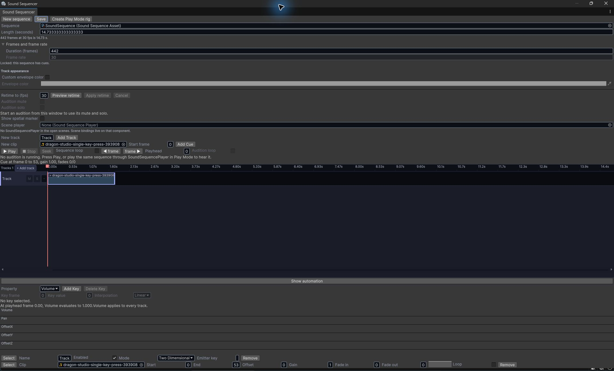
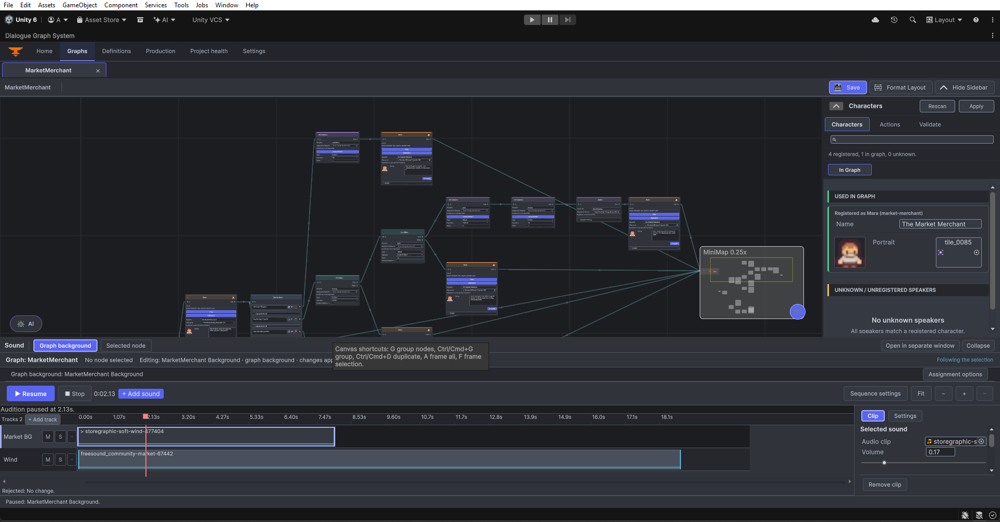

Set up Walla sound in DGS
Create a short sound sequence, put audio clips on its timeline, and attach the sequence to a dialogue graph or one dialogue node. Walla is the DGS Sound Sequencer: it authors clip timing and graph sound behavior; your scene still needs a runtime bridge to play that behavior during dialogue.
AudioClip into your Unity project. The graph editor integration is included with the DGS Sound Sequencer module. You do not need an AI provider or the optional Input System package to author a sequence.Make a sound sequence
- Open Window > Beka Forge > Dialogue Graph System > Sound Sequencer.
- In the toolbar, click New sequence. The new asset is created under
Assets/Beka Forge/Dialogue Graph System/Sound Sequencer/Sequences. - Set Length (seconds) or Duration (frames) to cover the sound you want, for example
10seconds at30fps. A new sequence lasts only one frame: adding a clip before increasing its duration trims the cue to that one-frame length. Set the frame rate before placing cues. - Use the existing Track, or in New track, type a useful name such as
Room tone, then click Add Track. Select the track row you want to edit. - In New clip, choose an imported audio clip. Set Start frame to
0for a clip beginning at the sequence start, then click Add Cue. Add more cues or tracks as needed. - Use the timeline to drag a cue to a new start time or another track. Drag a cue edge to trim it. Select a cue to edit its clip and timing details in the inspector.
- Choose Save in the toolbar.
Checkpoint: a named track and a cue are visible on the timeline, and the sequence asset is saved. New sequences start at 30 frames per second. The timeline can show seconds or frames; stored cue positions remain frame-based.

Preview a sequence in Play Mode
- In Unity, use the sequence inspector and the relevant Sound tools to review its authored data. The browser transport below does not test an AudioListener or play audio.
- In the Sound Sequencer window, open the sequence you want to preview and click Create Play Mode rig. The command adds a
SoundSequencePlayerto the active scene and assigns the current sequence. - Enter Play Mode and use the sequencer transport to play, pause or stop the preview. If you are testing in a built game, use the graph runtime setup below instead; the editor preview rig is for scene Play Mode.
The steps above describe Unity editor behavior. The website example only changes its local transport state: it does not create a Play Mode rig, access a scene, play audio, save an asset, or test a built game.
Assign sound to a dialogue graph
The DGS graph editor installs a Sound strip in its bottom dock when a graph is loaded. You do not add a special sound node to make the editor appear.
- Open Tools > Beka Forge > Dialogue Graph System > Open Editor, select the Graphs tab, and open the graph you want to edit.
- Expand the graph's Sound strip. Select Graph background as the scope.
- If the graph has no background yet, choose Create background… to make and assign a new sequence, or choose Choose existing to assign a sequence already in the Project.
- Click + Add sound. Choose an audio asset already in the Project, or choose the import action and copy an audio file into your project when prompted. Select or create a track destination and confirm the add action.
- Save the sequence in the timeline. The graph assignment is stored with the graph's sound sidecar; keep the graph asset and its sidecar together when moving or versioning authored content.
Checkpoint: the Sound strip's summary names the graph background sequence, and the timeline shows its track and cue. Selecting a different graph or node in the editor is authoring; it does not start that sound in the running game.

Give one dialogue node its own sound
Use node scope for sound that belongs to one part of a conversation. A node can have two independent settings: a replacement background chosen when the node starts, and a local sound that runs during that node.
- In the graph, select exactly one node, then switch the Sound panel to Selected node.
- Use the slot dropdown to choose Sound for this node for a local cue, or Background sound for a replacement background.
- If the slot is empty, choose Create node sound… or Create background…, or choose an existing sequence. The new sequence is assigned to the selected node and slot.
- For a replacement background, open the assignment options and set When this node starts to Change background. Leave the default Continue current background when the node should not replace the graph's current bed. Other supported policies are Return to graph background and Stop background.
- Use + Add sound to add a clip to the sequence, then save it. The node's sound only takes effect when dialogue execution reaches that node.
Checkpoint: the compact node summary shows the assigned local sound or replacement sequence. The Background on entry policy is separate from Sound during this node; you can author either or both.
Prepare graph sound for runtime
The graph panel edits sidecar authoring data. A player build uses a prepared SoundGraphBindingAsset, which contains direct asset references and is checked against that graph's latest sidecar. For a small editor utility, call the current preparation API for the graph you intend to ship:
#if UNITY_EDITOR
using BekaForge.DGS.SoundSequencer.DgsEditor;
using UnityEditor;
using UnityEngine;
public static class PrepareTownGraphSound
{
[MenuItem("Tools/My Game/Prepare Town Graph Sound")]
private static void Prepare()
{
const string graphPath = "Assets/MyGame/Graphs/TownConversation.asset";
var result = SoundGraphBindingPreparer.Prepare(graphPath);
if (!result.Prepared)
{
Debug.LogError("Sound binding was not prepared: " + result.Reason);
return;
}
EditorGUIUtility.PingObject(result.Asset);
Debug.Log("Prepared graph sound binding at " + result.AssetPath);
}
}
#endifChange graphPath to the actual DialogGraph asset path. Put this helper in an Editor folder in your game project. Preparation can refuse invalid or out-of-date authored data; read the reason and fix the graph before continuing.
- In the scene that runs the conversation, add Graph Sound Runtime Bridge to a GameObject.
- Assign the conversation's
DialogManager, the prepared binding asset, and two separateSoundSequencePlayercomponents: one for the persistent ambience and one for node-local cues. The bridge does not share those players with dialogue voice or Banter audio. - In an editor compiled with
BEKA_FORGE_DEVELOPMENT, the optional diagnostic is Tools > Beka Forge > Developer > Dialogue Graph System > Sound Sequencer > Check Runtime Sound Binding Freshness. It checks loaded scenes but does not prepare or update bindings. The Play Mode and player-build freshness gates run automatically; after changing graph sound assignments, rerun the preparation helper above and keep the bridge assigned to the returned binding.
The editor gate automatically refuses Play Mode when a loaded scene uses a stale binding, and the build callback checks each scene Unity is building. The manual menu check is a development-only diagnostic; it does not repair stale data. After changing the graph's sound assignments, prepare the binding again and keep the scene's bridge pointed at the prepared asset.
Dialogue and AI: what connects
Walla follows DGS graph execution at runtime. A graph background is persistent sound for that graph; a node-local cue starts and stops with that node's execution; a node's replacement background follows its selected entry policy. This is different from a dialogue action that calls your own audio code.
The included DGS AI Extension helps author dialogue graphs. It does not automatically choose, import or prepare Walla sequences. If AI helped create or revise a graph, review and apply the graph first, then select the exact graph and nodes in the Sound panel and prepare a fresh runtime binding. See AI authoring in DGS and Integrating dialogue actions.
Common problems
| What you see | What to check |
|---|---|
| A new clip is only one frame long. | Increase the sequence duration before adding the cue. If you already added it, select the cue and extend its end within the new duration, or remove and add it again. |
| The Sound strip is missing. | Open the DGS main window, switch to Graphs, and load a graph. In development builds, use Tools > Beka Forge > Developer > Dialogue Graph System > Sound Sequencer > Graph Sound Panel Status for an editor status message. |
| + Add sound is unavailable. | Create or choose a sequence first. For node scope, select exactly one graph node and choose a slot that applies to the current policy. |
| A node's replacement sequence is assigned but has no effect. | For a replacement background, set When this node starts to Change background and ensure the slot has a sequence. |
| Play Mode refuses to start or the build reports stale sound. | Run the preparation helper for the current graph and check that the scene's bridge uses the returned binding. Then rerun the freshness check. |
| The panel says nothing is playing during a dialogue. | Confirm the scene has the correct DialogManager, prepared binding, two distinct player components, and a conversation that actually executes the assigned graph/node. Selecting a node in Edit Mode is not playback. |
| The transport says it is playing but there is no audible output. | Check the clip, AudioListener, output mixer/device and system volume. A successful editor transport state is not proof of hearing. |
Further reading
- Create a branching DGS dialogue graph
- Connect graph actions to your game
- Use DGS AI authoring responsibly
- In the installed module:
Sound Sequencer/Documentation/README.md.
Source basis: this page follows the current standalone Sound Sequencer window, graph Sound panel, sidecar binding preparer, runtime bridge and freshness gate. Preview, build, and editor status checks do not replace an audible device check.